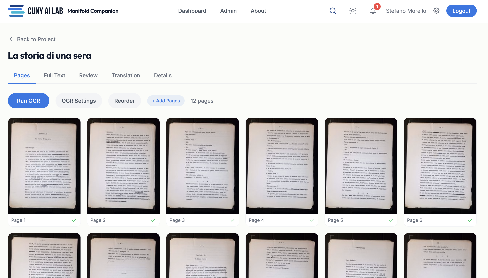
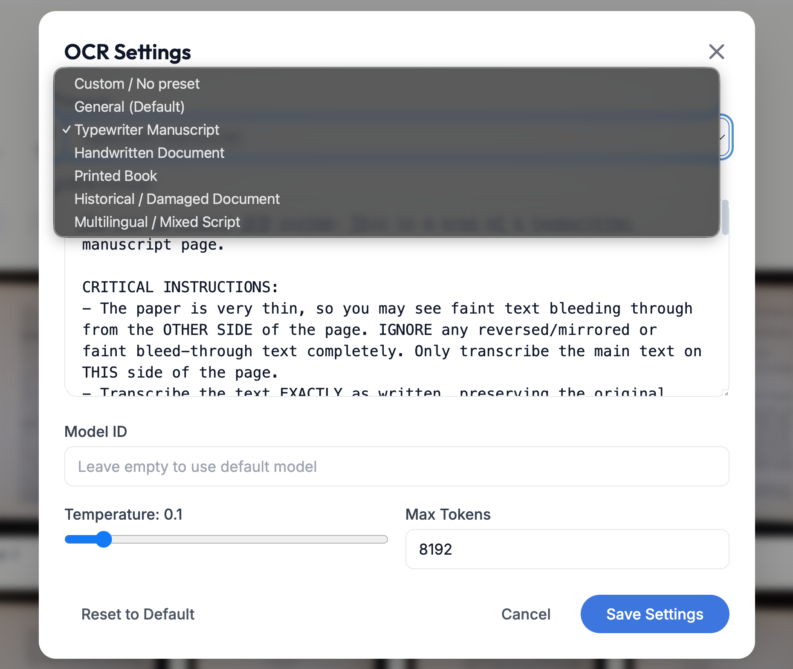
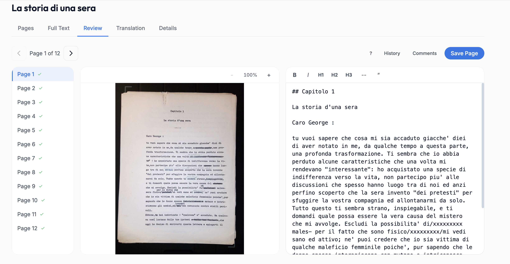
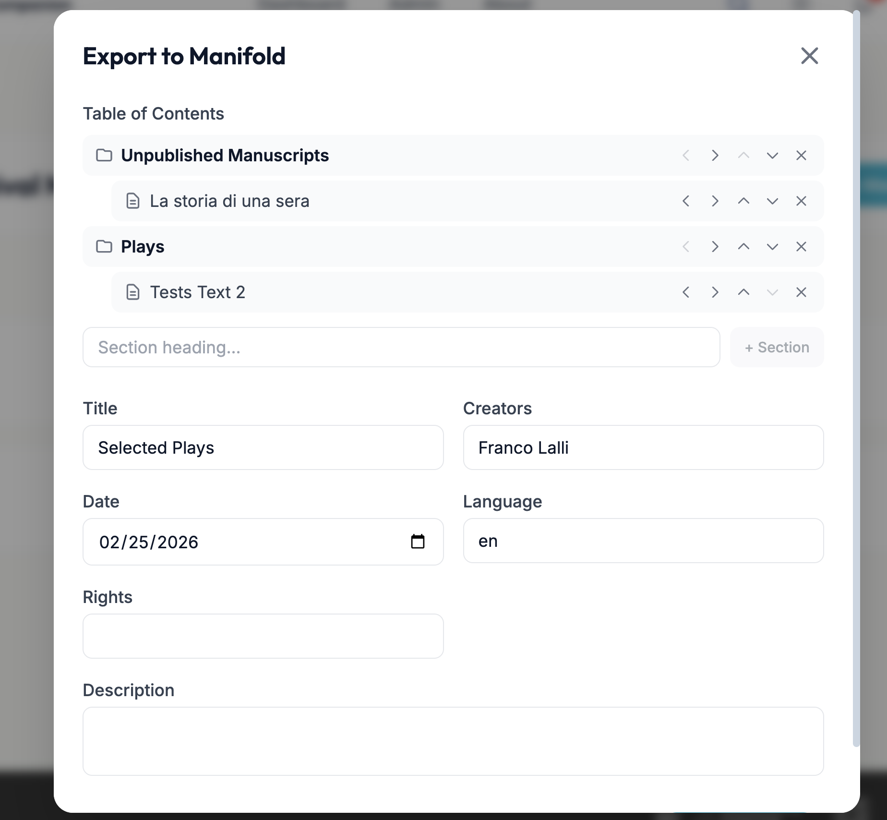

Open Knowledge Fellowship
Open Knowledge Fellowship
AI & Open
Educational Resources
Stefano Morello · Zach Muhlbauer · Stephen Zweibel
CUNY AI Lab
What kind of world are we building as we use AI?
Langdon Winner asks us to look at technologies as forms of life, not just tools. AI is already part of teaching and learning, including for students, and the Graduate Center’s official guidance leaves decisions about AI use to you. Before you use it in teaching or OER work, ask what AI changes in your classroom and in the knowledge commons in which you participate.
Langdon Winner, “Technologies as Forms of Life,” The Whale and the Reactor, 1986.
Large language models predict tokens
A large language model (LLM) generates an answer through inference. Inference builds the output one token at a time.
A token can be a word, part of a word, a number, or punctuation. The model reads the context, predicts the next token, adds it, and repeats.
Inference
The LLM generates an answer
Tokens
Text becomes word pieces, numbers, or punctuation
Context
The prompt plus output generated so far
Next-token prediction
The model adds one token and repeats
How large language models are trained
Training repeats one task at huge scale. The model guesses a hidden next token, checks the guess, and shifts its weights.
Later tuning uses examples and human rankings.
Sources. Brown et al., 2020; Ouyang et al., 2022.
Training text
A long path of tokens from web pages, books, code, articles, and other sources
Guess and check
The model predicts the next token, then compares it with the real one
Weights shift
The math changes so the next guess is closer
Human rankings
Later tuning teaches the model which answers people prefer
Unpacking The Pile
Many commercial AI companies hide or obfuscate their training data. EleutherAI documented The Pile, an 825 GiB English corpus assembled in 2020.
- Built from 22 text sources
- Created for large language model training
- Includes Wikipedia, Project Gutenberg, Stack Exchange, GitHub, arXiv, PubMed Central, FreeLaw, and Books3
Books3 is the contested part. It contains about 196,000 books copied from Bibliotik, a private book-piracy site.
Sources. Gao et al., “The Pile,” 2020; Biderman, Bicheno, and Gao, “Datasheet for the Pile,” 2022.
Largest components by effective size
Pile-CC 18.1%
PubMed Central 14.4%
Books3 12.1%
OpenWebText2 10.0%
arXiv 9.0%
GitHub 7.6%
FreeLaw 6.1%
Stack Exchange 5.1%
Bars are scaled against Pile-CC. The percentages show each source’s share of The Pile; 14 smaller sources make up the remaining 18%.
II
Part II
What It Can Do Now
Rewarded for guessing
Kalai et al. argue that hallucinations persist because training and evaluation reward guessing over acknowledging uncertainty.
Pretraining learns patterns
For rare facts, the model often relies on nearby patterns, so a wrong answer can sound fluent.
Benchmarks reward test-taking
Accuracy scoreboards give credit for a lucky guess and no credit for uncertainty.
On hallucination incentives: Kalai et al. (OpenAI & Georgia Tech), “Why Language Models Hallucinate,” 2025.
Grounding the answer
Prompt a frontier model for today’s weather. A grounded system searches a live source before answering.
Tools let the model use information outside its training data.
- Search the web or a catalog
- Read a file you give it
- Run code and read the result
← Click to compare the guess with the grounded answer.

Ungrounded
A plausible guess from patterns, not today’s forecast.

Grounded
After searching live sources, it reports current conditions.
Working in a loop
Agentic systems revise each tool call from the last result. Test-time computing gives the loop more passes; OpenClaw and Hermes agents run the loop.
- Search: skim weak hits, rewrite the query
- Code: read an error, patch, rerun
- OCR: inspect bad text, tighten instructions
III
Part III
Problematics
What happens to “open”
When you license work openly, anyone may reuse it, so long as they credit you and give back to the commons. Model builders train on the work without crediting it or giving anything back.
Openly licensed work is the easiest to ingest, because anyone may copy it.
On openness as its own vulnerability: Open Future, “The Paradox of Open”; Verhulst, “The Weaponisation of Openness,” 2025.
The open bargain
Reuse freely · credit the source · give back
Model builders train on it
They reuse the work, drop the credit, and return nothing
A “data winter”
People stop sharing; the commons shrinks
Chatbots take the audience
When a chatbot answers the question, people stop clicking through to the source.
On a volunteer-run commons, the readers are also the people who maintain it. Referral traffic to open sites has fallen hard this year, and Wikipedia’s human visits are sliding even as the bots scraping it climb.
On the referral collapse: AdExchanger, 2025; on Wikipedia’s human traffic and crawler load, Wikimedia, 2025.
Academic publishers are selling scholarly writing to AI companies.
In the reported deals, authors were not asked or paid.
Taylor & Francis took $10 million from Microsoft, and Wiley took $44 million. The Authors Guild says authors were not asked or paid. The writing sold was the closed, paywalled kind that authors sign over to publishers.
On the publisher–AI licensing deals: The Bookseller, 2025; Authors Guild.
A license alone will not stop model training.
In 2025 courts ruled that training can be fair use even on copyrighted work. Anthropic paid $1.5 billion for pirating the books, not for training on them. A restrictive license mostly affects people who want to reuse your work in ordinary ways. Collective responses, like CC’s preference signals or Wikimedia charging scrapers for access, have more force.
CC licenses can’t block training: CC legal primer, 2025. The ruling: Bartz v. Anthropic + $1.5B settlement. Collective responses: CC, “From Signals to Infrastructure,” 2026; Wikimedia paid API, 2025.
When open knowledge becomes weights
Wiley’s 5Rs ask whether people can keep, revise, remix, reuse, and share a resource. When model builders turn that material into weights, the checks change.
- Can people download and run the weights?
- Can people inspect the training data and code, or are they kept behind closed doors?
- Does the license permit reuse, or does it stay semi-permissive or restrictive?
- Does the model require costly hardware by design?
Sources. Wiley; UNESCO, 2024; OSI, 2024; Society & AI, 2025.
Public AI
A closed model is owned and run by one company that decides who can use it and how. Open models can be run by anyone and are governed in public, and smaller ones already exist.
Our lab runs on models like these. It’s a public service and stores none of your data.
On politics built into technology: Winner, “Do Artifacts Have Politics?” 1980; on public AI, Open Future; Internet Policy Review, 2025.
The CUNY AI Lab
A faculty- and staff-led group at the Graduate Center. We build and run AI infrastructure for teaching and research across CUNY.
It’s a public, non-commercial service. It runs on open models and doesn’t train on your data.
Where it helps with OER work
For making and adapting open materials, a few uses are worth it, as long as a person owns the result.
♿Accessibility
Draft alt text and captions, then check them. It can speed up a tedious obligation.
📄Digitization
Turn scanned pages and old PDFs into editable, publishable text.
✎Drafting & translation
Rough drafts and translations you revise into shape.
Judging appropriate use
A few questions to ask in every case:
Accountable
A person stands behind the result, and it’s theirs to license once they’ve shaped it.
Disclosed
Say where AI helped. The lab has a disclosure tool for it.
Verified
Check what it produced against a reliable source before it ships.
Grounded
Give it your own sources to work from.
From idea to artifact
For OER, subject experts can now build the resource they imagine, often without writing every line themselves.
📚Digitize & open
Turn scanned archives and old PDFs into searchable, openly licensed resources.
🎮Make it interactive
Generate games and readers students want to use.
🤝Democratize
Lower the barrier so someone with no coding background can still build a working tool.
Manifold Companion
A document-processing platform that turns scanned pages and PDFs into publication-ready texts for CUNY’s Manifold instance.
AI does the first pass (OCR, structure), and humans review and export.

Pages & OCR
Upload scans, run OCR, review page by page.

Tunable OCR
Presets and custom instructions per document type.

Human review
Original scan beside editable text. Correct it before you publish.

Export to Manifold
Arrange contents and Dublin Core metadata, then publish.
Lalli — Il Venditore di Sogni
An OCR + translation pipeline that digitizes the manuscripts of Italian-American writer Franco Lalli, then publishes them as an open, searchable archive.
Anyone can browse the archive freely, original beside translation, with scholarly metadata.
Italian American Open Syllabus
A curated, peer-reviewed collection of open essays and reading lists on Italian-American literature and culture, published openly on Manifold.
Where AI helped: I built a skill that converts contributions I receive in Word into clean, parsed HTML and attaches a stylesheet. AI mostly handled the CSS. The editing and scholarship were mine.
Impariamo l’Italiano!
Interactive Italian-learning games (Wordle, memory, a verb-tense wheel, crosswords), free and no login required.
Bea has no coding skills. The whole site was built with AI assistance, by an author with no code writing real OER. (There’s a Russian edition, too.)
Stefano made a multilingual version, LanGames, that generates game content for ten languages.
Cloze Reader
A reading-practice tool that turns passages into cloze (fill-in-the-blank) exercises that scaffold close reading and vocabulary.
An OER built by one of today’s presenters, small and free to use.
ThinkWith
A first-year writing instructor, Nicole Walker, built this after our workshops. A student pastes in a source passage and a cultural artifact, plus a paragraph connecting the two. The model gives feedback on how well the connection works.
What worked: the AI never writes the paragraph for the student. It keeps sending them back to revise until the paragraph ties the source and the artifact together.
Where it breaks: the judge is itself a model scoring a rubric, so the teacher still has to judge the result. And Walker said building it meant “committing all the sins of instrumentalist thinking.”
Informed refusal and informed adoption
Adopting and refusing are both legitimate. Whichever you choose, you should be able to say why.
Adopt, with reasons
Use it where it helps, with someone accountable for the result, and say why.
Refuse, with reasons
Decline it where it doesn’t fit, and say why. The GC guidance leaves room for exactly that.
Where in your teaching would a grounded, course-specific assistant help, and where would it get in the way?
What would informed refusal look like in your field? What would you want to tell a student about it?
If you released an OER, how would you want AI to be allowed to use it, or not?
What’s one resource you’ve wanted to build but couldn’t? Could anything here lower that barrier?
Which of today’s worries still feels unresolved to you?
References
- Kalai et al. (OpenAI & Georgia Tech), “Why Language Models Hallucinate,” 2025.
- Stanford HAI, “The 2025 AI Index Report,” 2025.
- Open Source Initiative, “The Open Source AI Definition 1.0,” 2024; “Meta’s Llama license is still not open source,” 2024.
- Groeneveld et al. (AllenAI), “OLMo: Accelerating the Science of Language Models,” 2024.
- David Wiley, “Defining the ‘Open’ in Open Content and OER” (the 5 R’s).
- UNESCO, “Open education principles: Resisting the metrics of AI black boxes,” 2024.
- Society & AI, “Beyond the Open-Weights: Open Education and the Compute Divide,” 2025.
- The Bookseller, “Academic publishers and AI – one year on,” 2025; Authors Guild, “AI Licensing: What Authors Should Know.”
- AdExchanger, “The AI Search Reckoning Is Dismantling Open Web Traffic,” 2025.
- Open Future, “Public AI,” and Internet Policy Review, “AI as commons,” 2025.
- Langdon Winner, The Whale and the Reactor (1986); “Do Artifacts Have Politics?” (1980); Autonomous Technology (1977).
- Bartz v. Anthropic (N.D. Cal., 2025): training ruled fair use, pirated sourcing not; $1.5 billion settlement, 2025.
- Creative Commons, “Understanding CC Licenses and AI Training: A Legal Primer,” 2025.
- Creative Commons, “Introducing CC Signals,” 2025; “From Signals to Infrastructure,” 2026.
- Open Future, “The Paradox of Open,” 2023.
- Stefaan G. Verhulst, “The Weaponisation of Openness,” 2025.
- Wikimedia Foundation, “How crawlers impact the operations of the Wikimedia projects,” 2025; Enterprise API, 2025.